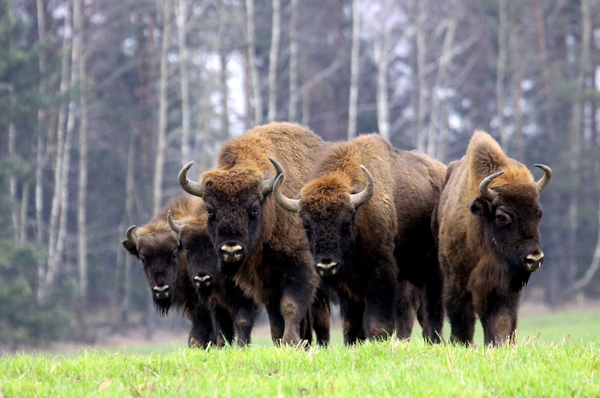
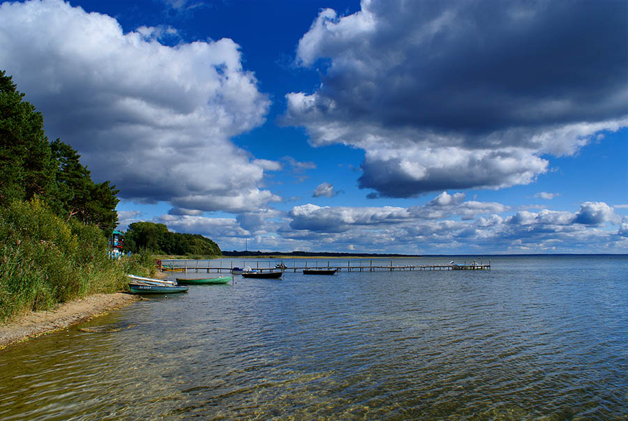
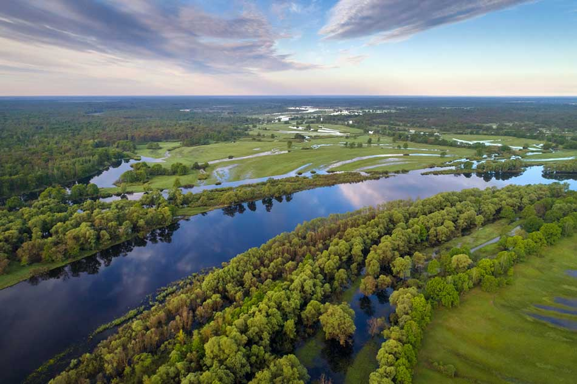

|  | Беловежская пущаБеловежская пуща в Беларуси — это не только национальный символ бывшей советской республики, но ещё и всемирно признанный биосферный заповедник. На огромной территории близ границы с польской половиной парка созданы уникальные условия для жизни редчайших видов животных, включая могучих зубров, а музейнаяи развлекательная составляющая делают из заповедной территории вполне современный регион для экотуризма европейского уровня. |
|  | НарочОзеро Нарочь – крупнейший пресноводный водоем на территории Беларуси, обладающий уникальной экосистемой. Озеро находится на северо-западе республики, в Мядельском районе Минской области, в 150 километрах от столицы страны. Нарочь является жемчужиной белорусского озерного края. Для защиты природного феномена весь регион, в котором располагается озеро, включен в обширный Нарочанский национальный парк. Этот природный заповедник привлекает тысячи туристов. Сюда едут полюбоваться нетронутой природой, порыбачить и поохотиться, отдохнуть и укрепить здоровье в прибрежных санаториях. |
|  | ПолесьеПоле́сье — историко-культурная и физико-географическая область, расположенная на территории Полесской низменности. |